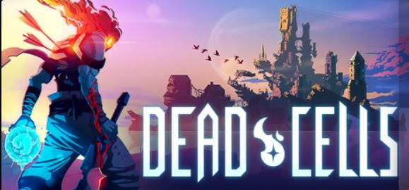

類銀河惡魔成遊戲介紹
死亡細胞

遊戲介紹
遊戲背景
你所操縱的主角，是一團可以附身在無頭屍體上的細胞。出於某些不爲人知的原因，他需要在一片由系統隨機生成、
擁有大量細節的地牢中不斷探索。玩家則需要從一次又一次的死亡中汲取經驗，然後期待在下一次的冒險中走得更遠。
以此爲核心而構建起來的遊戲循環，讓《死亡細胞》的體驗變得非常特別。每到達一個新區域，或者發現一種新的武器、裝備、技能，
背後都會摻雜着許多苦樂參半卻又難以忘懷的回憶。在這樣的基調之下，你將會慢慢揭開籠罩在劇情上的神祕面紗。。
遊戲玩法
遊戲分為很多流派跟打法，有傷害高的爆擊，有血量多的補血流，有陷阱打法的陷阱流，每通關一關，獲得死亡點數就可退換，但遊戲是採ROGLITE
遊戲模式，每次死王，身上的裝都會掉，但有些技能是在地圖中尋找，可以一直待在身上的，例如:
傳送，二段跳等